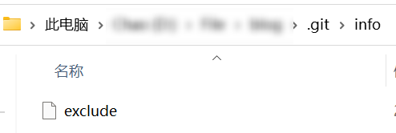
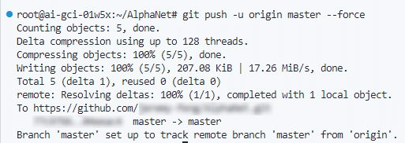
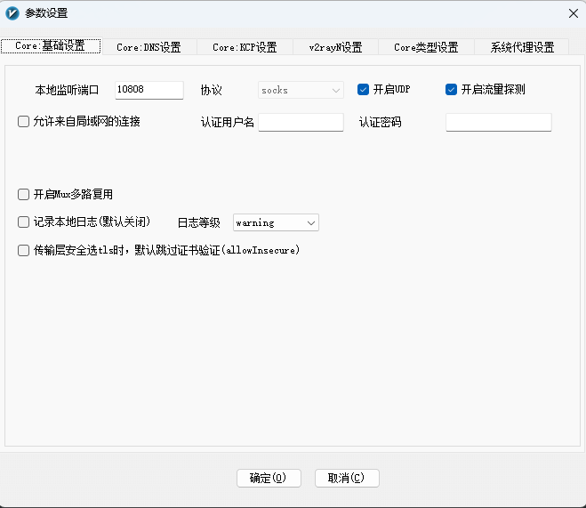

常用的 Git 代码¶
本文记录了常用的 Git 命令，并转载了一些优质博文（见相关链接）作为补充。
三个基本概念¶
- 工作区 (Workspace) 是计算机中项目的根目录
- 暂存区 (Index) 像个缓存区域，临时保存你的改动
- 版本库 (Repository) 分为本地仓库（Local) 和远程仓库 (Remote)

配置 Git¶
查看当前仓库的 gitconfig¶
或者
查看用户级别的 gitconfig¶
或者
配置用户名和邮箱¶
若不需要配置全局的用户名和邮箱，只需要配置当前仓库的用户名和邮箱，可以将 --global 删除。
删除 Git 配置项¶
要删除 Git 配置中的某个配置项，可以使用以下命令：
其中 <key> 是要删除的配置项的键名。
如果你要删除全局配置中的某个配置项，可以使用 --global 参数：
这将从全局配置文件中删除指定的配置项。
如果你要删除本地仓库的配置项，可以在仓库目录下执行命令，不需要使用 --global 参数。
如果你要删除所有的 Git 配置，可以删除配置文件。配置文件的位置取决于你的操作系统和安装方式。在大多数情况下，全局配置文件位于用户目录下的 .gitconfig 文件。你可以使用文件管理器或命令行删除该文件。
如果你在删除 Git 配置项时遇到警告 "warning:
要删除具有多个值的配置项，可以使用 --unset-all 参数。这将删除所有与指定键名相关联的配置值。
如果你要删除全局配置中的具有多个值的配置项，可以使用 --global 参数：
请注意，使用 --unset-all 参数将删除所有与指定键名相关联的配置值，而不仅仅是删除其中一个值。因此，在执行此操作之前，请确保你了解删除配置项的后果，并且确定你想要删除所有值。
免密码提交¶
在终端输入：
再次输入一次密码，即可保存密码，今后提交本仓库时都不需要密码了。
若要设置为用户范围内全局免密码，需要添加 --global：
密码将以明文形式存放在磁盘！
-
store模式会将凭证用明文的形式存放在磁盘中，并且永不过期。 这意味着除非你修改了你在 Git 服务器上的密码，否则你永远不需要再次输入你的凭证信息。 这种方式的缺点是你的密码是用明文的方式存放在你的 home 目录下。 -
cache模式会将凭证存放在内存中一段时间。 密码永远不会被存储在磁盘中，并且在15分钟后从内存中清除。可以设置--timeout <seconds>参数，可以设置后台进程的存活时间（默认是 “900”，也就是 15 分钟）。
新建、克隆、推送、合并、删除¶
在已有文件夹下新建 Git 仓库¶
cd existing_folder
git init
git remote add origin git@github.com:jeremy-feng/jeremy-feng.github.io.git
git add .
git commit -m "Initial commit"
git push -u origin master
克隆仓库¶
git clone git@github.com:jeremy-feng/jeremy-feng.github.io.git
cd 项目名
touch README.md
git add README.md
git commit -m "add README"
git push -u origin master
添加和提交¶
回滚某个文件¶
参考：https://www.cnblogs.com/acm-bingzi/p/gitCheckout.html
先找到需要会滚到的 commit id：
再用 git checkout 回滚到该 commit id
git rebase¶
如果远程仓库修改了 A 文件，但本地仓库没有修改 A 文件，而是修改了 B 文件，此时直接从本地 push 到远程时会报错：
可以用 git rebase 先将本地仓库建立在远程的基础上。
再 git push 即可。
git restore¶
git restore 是 Git 版本控制系统中的一个命令，用于还原文件或目录的状态。它可以用于撤消对工作目录中文件的更改，或者将文件从暂存区还原到工作目录。
git restore 命令的使用方式如下：
这个命令将会将指定的文件还原到最近的提交状态，也就是撤销对文件的修改。
你还可以使用 --staged 选项来将文件从暂存区还原到工作目录：
这个命令会将文件还原到最近的提交状态，并将其从暂存区移除。
除了还原文件，git restore 还可以用于恢复删除的文件。你可以使用 --source 选项指定要恢复的文件的来源：
这个命令会将指定提交中的文件还原到当前工作目录。
总的来说，git restore 命令是一个非常有用的工具，可以帮助你管理文件的状态，撤销修改以及恢复删除的文件。
删除.git仓库¶
-r代表删除文件夹；-rf代表强制删除，即删除当前目录下的所有文件及目录，并且是直接删除，无需逐一确认。
Commit message 的格式¶
每次提交，Commit message 都包括三个部分：Header，Body 和 Footer。
其中，Header 是必需的，Body 和 Footer 可以省略。
不管是哪一个部分，任何一行都不得超过 72 个字符（或 100 个字符）。这是为了避免自动换行影响美观。
Header¶
Header 部分只有一行，包括三个字段：type（必需）、scope（可选）和subject（必需）。
（1）type
type用于说明 commit 的类别，只允许使用下面 7 个标识。
- feat：新功能（feature）
- fix：修补 bug
- docs：文档（documentation）
- style：格式（不影响代码运行的变动）
- refactor：重构（即不是新增功能，也不是修改 bug 的代码变动）
- test：增加测试
- chore：构建过程或辅助工具的变动
如果type为feat和fix，则该 commit 将肯定出现在 Change log 之中。其他情况（docs、chore、style、refactor、test）由你决定，要不要放入 Change log，建议是不要。
（2）scope
scope用于说明 commit 影响的范围，比如数据层、控制层、视图层等等，视项目不同而不同。
（3）subject
subject是 commit 目的的简短描述，不超过 50 个字符。
- 以动词开头，使用第一人称现在时，比如
change，而不是changed或changes - 第一个字母小写
- 结尾不加句号（
.）
Body¶
Body 部分是对本次 commit 的详细描述，可以分成多行。下面是一个范例。
More detailed explanatory text, if necessary. Wrap it to
about 72 characters or so.
Further paragraphs come after blank lines.
- Bullet points are okay, too
- Use a hanging indent
有两个注意点。
（1）使用第一人称现在时，比如使用change而不是changed或changes。
（2）应该说明代码变动的动机，以及与以前行为的对比。
Footer¶
Footer 部分只用于两种情况。
（1）不兼容变动
如果当前代码与上一个版本不兼容，则 Footer 部分以BREAKING CHANGE开头，后面是对变动的描述、以及变动理由和迁移方法。
BREAKING CHANGE: isolate scope bindings definition has changed.
To migrate the code follow the example below:
Before:
scope: {
myAttr: 'attribute',
}
After:
scope: {
myAttr: '@',
}
The removed `inject` wasn't generaly useful for directives so there should be no code using it.
（2）关闭 Issue
如果当前 commit 针对某个 issue，那么可以在 Footer 部分关闭这个 issue。
也可以一次关闭多个 issue。
Revert¶
还有一种特殊情况，如果当前 commit 用于撤销以前的 commit，则必须以revert:开头，后面跟着被撤销 Commit 的 Header。
revert: feat(pencil): add 'graphiteWidth' option
This reverts commit 667ecc1654a317a13331b17617d973392f415f02.
Body 部分的格式是固定的，必须写成This reverts commit <hash>.，其中的hash是被撤销 commit 的 SHA 标识符。
如果当前 commit 与被撤销的 commit，在同一个发布（release）里面，那么它们都不会出现在 Change log 里面。如果两者在不同的发布，那么当前 commit，会出现在 Change log 的Reverts小标题下面。
commitlint.io 在线编写规范的 Commit message¶
Commitlint.io helps your project to ensure nice and tidy commit messages without needing any downloads or installations. It's designed with your workflow in mind by using zero change to your system.
Commitizen¶
Commitizen是一个撰写合格 Commit message 的工具。
安装命令如下。
然后，在项目目录里，运行下面的命令，使其支持 Angular 的 Commit message 格式。
以后，凡是用到git commit命令，一律改为使用git cz。这时，就会出现选项，用来生成符合格式的 Commit message。

.gitignore¶
若要忽略某些文件，不让git提交这些文件，可以在.gitignore文件设定规则。
新建 .gitignore 文件¶
添加规则¶
- 禁止上传文件夹
- 禁止上传某个后缀的文件
.gitignore 文件不生效时的解决方案¶
在终端输入
把本地缓存删除，改变成未 track 状态。
如果只想把某些文件删掉，例如删除 .xml 文件，可以用
示例¶
目录结构：
.gitignore文件中的内容：
忽略.gitignore文件本身的另一种方法¶
在.git/info/exclude添加.gitignore：

不忽略文件和文件夹¶
方法：在路径前加上 !。
在上面的示例中，* 表示忽略所有文件和文件夹。!path/to/uploaded_file.txt 表示不忽略 path/to/uploaded_file.txt 文件。
添加 submodule¶
要将一个仓库中的一个目录映射到另一个仓库，你可以使用 Git 的 submodule 功能。下面是添加 submodule 的基本步骤：
-
打开你想要添加 submodule 的仓库的本地副本。
-
使用以下命令添加 submodule：
例如：
-
添加并提交 submodule 更改：
-
如果你将这些更改推送到远程仓库，确保在推送之前初始化并更新子模块：
现在，你的主仓库中的指定目录应该映射到另一个仓库。
请注意，当其他人克隆你的仓库时，他们需要运行以下命令来初始化并拉取子模块中的内容：
这样他们才能获取到子模块的内容。
连接 GitHub 的问题¶
测试和 GitHub 的网络通信是否正常¶
ssh -T -p 443 git@ssh.github.com来测试和 GitHub 的网络通信是否正常，如果提示Hi xxxxx! You've successfully authenticated, but GitHub does notprovide shell access. 就表示一切正常了。
报错 The TLS connection was non-properly terminated.¶
git push origin master:master
fatal: unable to access 'https://github.com/XXX.git/': gnutls_handshake() failed: The TLS connection was non-properly terminated.
两种解决方法：
-
bash git config --global http.sslVerify false这种方法曾经成功过，但后来再遇到时又报错了。
-
bash git push -u origin master --force第一种方法失效时，第二种方法可以解决报错。

报错 fatal: unable to access xxx: Failed to connect to github.com port 443 after 21072 ms: Timed out¶
解决方法：
删除原有的 SSH Key，再重新生成一份 SSH Key，上传新的 SSH Key 到 GitHub。
为Git配置代理¶
git config --global http.sslverify false
git config --global http.https://github.com.proxy socks://127.0.0.1:10808
git config --global https.https://github.com.proxy socks://127.0.0.1:10808

# 删除重置上述参数
git config --global --unset http.sslverify
git config --global --unset http.proxy
git config --global --unset https.proxy